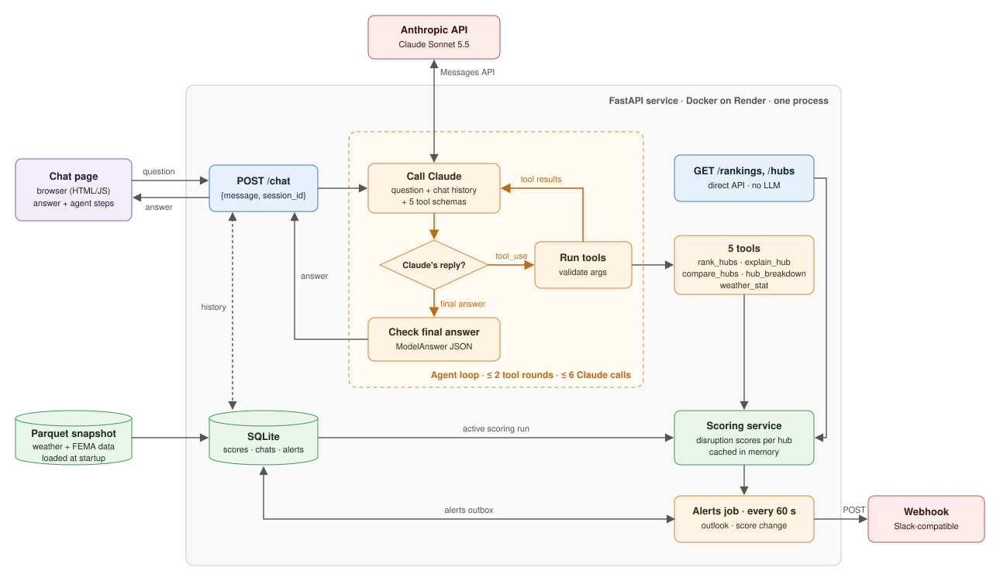

Ranks US distribution hubs by expected weather disruption days per year (a deterministic engine on public data) and lets analysts ask follow-up questions to a Claude agent that only explains engine numbers.
uv sync copy .env.example to .env → ANTHROPIC_API_KEY=... uv run uvicorn app.main:app → http://127.0.0.1:8000/
docker build -t hub-weather-risk ., docker run -p 8000:8000 --env-file .env hub-weather-risk.
Render: New → Blueprint on the repo (render.yaml), set ANTHROPIC_API_KEY and APP_PASSWORD;
auto-deploys on push. Tests uv run pytest -q (92, offline, CI) · evals uv run python -m evals.run (24 cases).

One process. The agent loop calls Claude; when Claude asks for a tool, the loop runs it against the scoring service and sends the
result back (at most 2 rounds) until Claude writes the final answer. GET /rankings and /hubs read the same scores without the LLM.
app/agent/loop.py)rank_hubs, explain_hub, compare_hubs, hub_breakdown,
weather_stat. Inputs are strict JSON schemas from Pydantic, validated again; invalid arguments go back as errors.ModelAnswer (answer, assumptions, confidence, uncertainty,
sources). Tools return pre-computed numbers and the server attaches the ranking, so the model never writes a number.app/scoring, config/disruption.yaml)| Parquet snapshot (git) | Source of truth: hubs, 91,300 weather rows, 669 declaration rows. Downloaded once by the
offline ingestion (python -m app.ingest) and committed. |
| SQLite | Rebuilt from the snapshot at startup. Small relational data, SQL, no server; WAL mode. Plain SQL, so Postgres is a mechanical move at scale. |
| Scoring runs | rule_sets, scoring_runs, hub_results, hazard_scores,
monthly_scores, disruption_days: every score traceable to the exact rules and data; one run is active. |
| Memory · app state | Active run cached (rankings < 1 ms); conversations, alerts (outbox). |
Why a snapshot instead of calling the APIs live:
app/alerts.py)Monthly outlook (7 days ahead: hubs whose coming month is historically severe) and score change (a new
scoring run moved a hub's index ≥ 25 points or changed its tier). Created once, delivered through an outbox with retries
to a Slack-compatible webhook; visible at GET /alerts.
app/main.py FastAPI: page, /chat, /rankings, /hubs, /alerts
app/agent/ loop.py · tools.py · schemas.py (JSON contracts)
prompts.py · trajectory.py (step records)
app/scoring/ disruption.py (rules engine) · periods.py
store.py (scoring runs) · service.py (cache)
app/alerts.py outlook + score-change alerts, outbox app/ingest.py offline ingestion → snapshot → scoring run config/ hubs · disruption (rules, index) · alerts data/snapshot/ parquet snapshot (committed) evals/ tests/ 24-case eval set · 92 tests (CI)